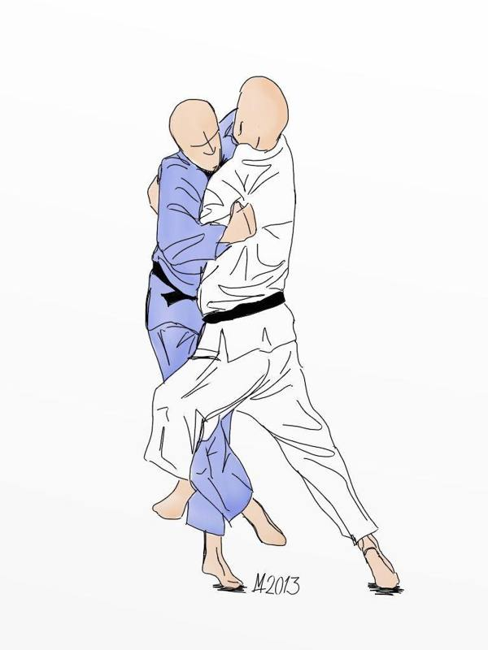
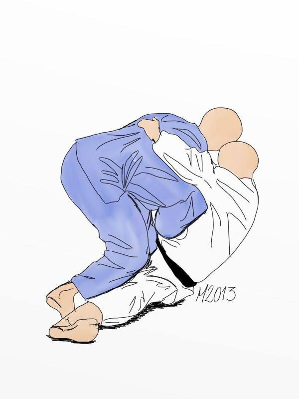
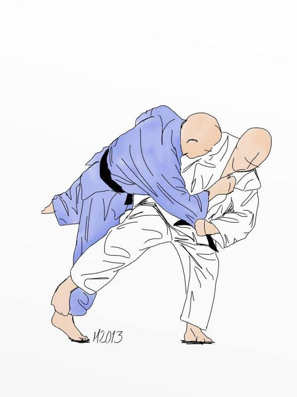
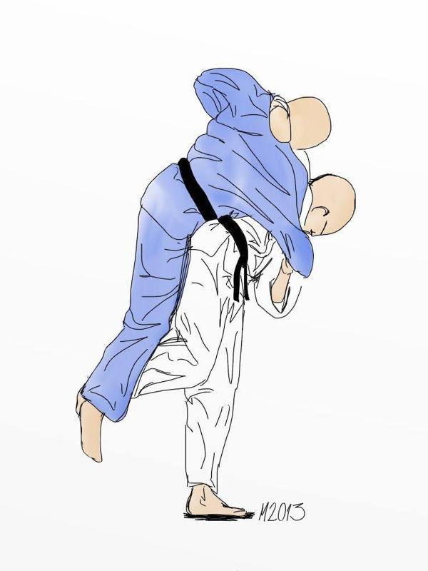
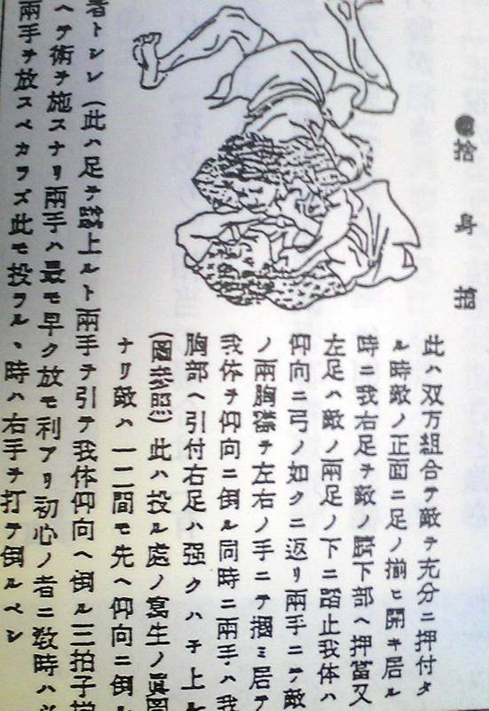
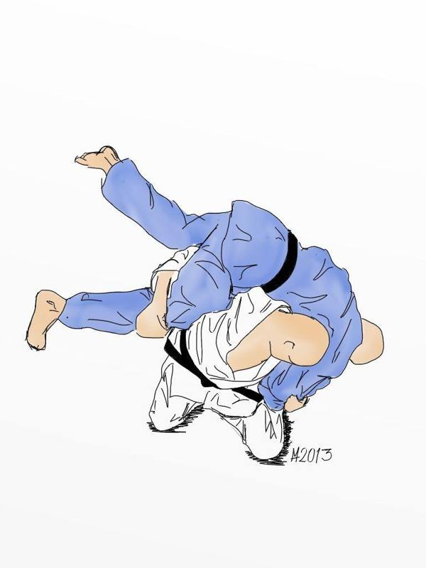

7. Gokyo Dai-sankyō — il terzo gruppo
Il Dai-sankyō (第三教, «terzo insegnamento») raccoglie le otto tecniche che, nel programma didattico del Kodokan, segnano l'incremento di abilità atteso intorno al secondo dan: proiezioni che richiedono ukemi (受身) maturo, timing sul passo dell'avversario e il controllo del proprio corpo in sacrificio. Il gruppo alterna due ashi-waza (足技, di gambe), tre koshi-waza (腰技, d'anca), una te-waza (手技, di braccia) e due sutemi-waza (捨身技, di sacrificio).
Storicamente, delle otto waza sette — tsuri-goshi, yoko-otoshi, ashi-guruma, hane-goshi, harai-tsurikomi-ashi, tomoe-nage e kata-guruma — figuravano già nel kyū (vecchio) Gokyo del 1895, distribuite in gruppi diversi; la sola ko-soto-gake fu introdotta con la revisione del 1920, quando i quarantadue insegnamenti originali furono riorganizzati nei cinque gruppi da otto. Di kata-guruma si conosce una genesi documentata, legata al giovane Kanō Jigorō, e un destino regolamentare singolare: dal 2013 non è più eseguibile in gara IJF, pur restando nel Gokyo e nel Nage-no-kata (投の形). Ogni tecnica è analizzata secondo le tre fasi canoniche: kuzushi (崩し, squilibrio), tsukuri (作り, costruzione) e kake (掛, esecuzione).
7.1 Ko-soto-gake (小外掛)
▶ Video Kōdōkan × IJF Academy: Ko-soto-gake (canale ufficiale KODOKAN)

Ko-soto-gake: l’aggancio esterno sul tallone (illustrazione: M. Hultström, CC BY-SA 3.0)
Nome e origine. Il nome si compone di ko (小, piccolo), soto (外, esterno) e kake (掛, agganciare): «piccolo aggancio esterno». È una ashi-waza, tra le tecniche in piedi (tachi-waza, 立技). Non figurava nel primo Gokyo del 1895: fu aggiunta con la revisione del 1920. Hidekazu Nagaoka, decimo dan, è talvolta indicato come suo perfezionatore o ideatore; è celebre come contropiede classico del tai-otoshi.
Il principio. Il kuzushi è diretto all'indietro o all'angolo posteriore, sulla gamba d'appoggio di uke (受) già caricata. Nel tsukuri la gamba di tori (取) si avvolge dall'esterno attorno al tallone-polpaccio di uke: a differenza del ko-soto-gari, qui il piede non falcia ma «aggancia» e solleva verso l'alto. Nel kake le braccia spingono il busto di uke in basso-indietro oltre la base sottratta. Condizione sine qua non: il peso di uke deve gravare sul piede agganciato.
Esecuzione da fermo.
- Dalla presa ai-yotsu (相四つ, manica-bavero) si attira uke in avanti fino a fargli avanzare e caricare il piede destro.
- Tori avanza il piede sinistro accanto all'esterno del piede destro di uke (tsukuri).
- Pianta e collo del piede sinistro agganciano dall'esterno il tallone-tendine di uke.
- Kake: si spinge uke in basso-indietro con entrambe le mani — la hiki-te (引手, mano che tira) in basso, la tsuri-te (釣手, mano che solleva) che preme — mentre il piede solleva il tallone agganciato; uke cade in diagonale posteriore.
Esecuzione in movimento. Si esegue al passo, quando uke avanza e il piede destro entra in carico, oppure come kaeshi-waza (返技, contro) al tai-otoshi: si scavalca la gamba distesa di uke e si aggancia la sua gamba d'appoggio. Da kenka-yotsu (拳四つ, prese opposte) è efficace con presa alta, nella forma «abbracciata» dei mongoli.
Varianti. Contro al tai-otoshi; aggancio al polpaccio anziché al tallone; tsuri-te dietro la schiena o la nuca (presa «georgiana»); esecuzione da fermo con passo diagonale profondo.
Errori comuni. (1) Attaccare la gamba scarica: uke resta stabile e contrattacca. (2) Sollevare la gamba senza spingere il busto all'indietro: manca il vettore di caduta. (3) Kuzushi insufficiente, o in avanti invece che all'angolo posteriore.
7.2 Tsuri-goshi (釣腰)
▶ Video Kōdōkan × IJF Academy: Tsuri-goshi (canale ufficiale KODOKAN)
Nome e origine. Tsuri (釣) significa «sollevare, tirare come alla lenza» e goshi/koshi (腰) è l'anca: «anca sollevante». È una koshi-waza. Presente fin dal primo Gokyo del 1895 (era nel dai-yonkyō), ricollocata nel dai-sankyō nel 1920. Descritta da Mifune e nell'Illustrated Kodokan Judo (1955, tecnica 18).
Il principio. La meccanica d'anca è quella del tsuri-komi-goshi, ma il kuzushi è prodotto dalla tsuri-te che solleva verticalmente afferrando il bavero alto, la manica opposta o direttamente la cintura-schiena, «pescando» uke in alto. Le anche di tori scendono sotto il suo baricentro (fulcro); la distensione delle gambe e la rotazione del busto proiettano in avanti.
Esecuzione da fermo.
- Kuzushi: si attira uke in avanti sulle punte, con la tsuri-te che tira verso l'alto.
- Tsukuri: pivot sul piede sinistro, ingresso con la schiena a contatto, anche sotto l'addome di uke; il braccio destro cinge la vita afferrando la cintura sul fianco o sul dorso (forma obi), oppure passa sopra la spalla di uke (forma con tsuri-te al bavero).
- Kake: distensione delle gambe, anca che spinge in alto, busto che ruota a sinistra; uke ruota sopra l'anca e cade davanti a tori.
Esecuzione in movimento. È ideale quando uke si raddrizza o indietreggia: si accompagna il suo passo arretrato entrando in rotazione nello stesso tempo. La presa alta alla schiena o alla cintura consente l'ingresso da kenka-yotsu.
Varianti. Obi tsuri-goshi (presa alla cintura posteriore) e forma con tsuri-te alla manica o al bavero; da distinguere da tsuri-komi-goshi («a strappo», dai-nikyō) e da o-goshi (braccio alla vita senza presa alla cintura).
Errori comuni. (1) Anche non sotto il baricentro: si solleva «di schiena». (2) Tsuri-te che tira in avanti invece che in alto: uke si piega in vita e si difende. (3) Ginocchia bloccate nel kake: si perde la molla di sollevamento.
7.3 Yoko-otoshi (横落)
▶ Video Kōdōkan × IJF Academy: Yoko-otoshi (canale ufficiale KODOKAN)

Yoko-otoshi: la caduta laterale di sacrificio (illustrazione: M. Hultström, CC BY-SA 3.0)
Nome e origine. Yoko (横) significa «fianco» e otoshi (落) «far cadere»: «caduta di fianco». È una yoko-sutemi-waza (横捨身技), sacrificio sul fianco. Presente fin dal primo Gokyo del 1895 — figurava addirittura nel dai-ikkyō, segno della sua antichità didattica — fu spostata nel dai-sankyō nel 1920. Descritta nell'Illustrated Kodokan Judo (1955, tecnica 19) e da Mifune.
Il principio. Il kuzushi è all'angolo anteriore (mae-sumi-kasumi). Tori inserisce la propria gamba come barra-fulcro davanti alle gambe di uke e si sacrifica cadendo sul fianco, usando il peso del corpo come vettore: uke, con le gambe bloccate, viene rovesciato in avanti-lateralmente oltre l'ostacolo.
Esecuzione da fermo.
- Dalla presa classica si attira uke in avanti, squilibrandolo verso il suo angolo anteriore destro.
- Tori porta il piede sinistro all'esterno del piede destro di uke e distende la gamba destra davanti alle sue gambe, tagliandogli la via.
- Kake: tori si lascia cadere sul fianco sinistro tirando con entrambe le mani in basso-avanti; uke ruota sopra la gamba-barriera e cade di fianco.
Esecuzione in movimento. Si applica quando uke avanza spingendo o reagisce a una finta in avanti: l'ingresso va colto nell'istante in cui il peso di uke transita in avanti. Il corpo di tori deve cadere contemporaneamente alla trazione delle braccia, mai prima.
Varianti. Forma del Gokyo con caduta laterale controllata; versioni da finta di o-soto-gari o da koshi-waza fallita; affine a yoko-gake (dai-gokyō), da cui differisce per direzione e punto d'aggancio della gamba.
Errori comuni. (1) Cadere prima di aver squilibrato: uke resta in piedi sopra tori. (2) Gamba-barriera troppo bassa o non tesa: uke la scavalca. (3) Trazione non coordinata con la caduta: si perde il vettore laterale.
7.4 Ashi-guruma (足車)
▶ Video Kōdōkan × IJF Academy: Ashi-guruma (canale ufficiale KODOKAN)

Ashi-guruma: la ruota con la gamba (illustrazione: M. Hultström, CC BY-SA 3.0)
Nome e origine. Ashi (足) è la gamba-piede e guruma/kuruma (車) la ruota: «ruota di gamba». È una ashi-waza. Presente fin dal primo Gokyo del 1895 (dai-gokyō), collocata nel dai-sankyō nel 1920. Il Kodokan ne evidenzia la parentela concettuale con hiza-guruma.
Il principio. La gamba destra distesa di tori, appoggiata col dorso della caviglia e del polpaccio sotto la rotula di uke, funziona da asse: uke, squilibrato all'angolo anteriore destro e incapace di avanzare il piede destro, ruota attorno a quel fulcro come una ruota. Il vettore rotazionale viene dalle braccia: la tsuri-te solleva, la hiki-te tira in basso-laterale.
Esecuzione da fermo.
- Si spinge o si attira uke facendolo indietreggiare; quando avvia il passo indietro col destro, tori si porta in posizione laterale destra.
- Kuzushi: la tsuri-te solleva, la hiki-te tira all'esterno sinistro; uke resta sulle punte, squilibrato in avanti-destro.
- Tsukuri/kake: tori, in appoggio sul sinistro, distende la gamba destra davanti al corpo di uke bloccandogli il ginocchio destro e ruota il busto a sinistra continuando la trazione: uke «gira» oltre la gamba e cade in avanti con moto circolare.
Esecuzione in movimento. La finestra è l'istante in cui uke inizia il passo all'indietro: tori chiude la distanza avanzando col destro e si porta di fianco. Tutto il movimento è un unico giro coordinato di piede e busto; chi frammenta l'azione perde la ruota.
Varianti. Raffronto con hiza-guruma (la pianta del piede blocca il ginocchio, ingresso frontale) e con o-guruma (gamba più alta, sulle cosce, dai-yonkyō); efficace anche come seguito di una finta di harai-goshi.
Errori comuni. (1) Gamba d'ostacolo piegata: niente fulcro rigido. (2) Kuzushi frontale invece che all'angolo destro: uke recupera col passo. (3) Rotazione del busto incompleta: la «ruota» si ferma a metà e uke contrattacca.
7.5 Hane-goshi (跳腰)
▶ Video Kōdōkan × IJF Academy: Hane-goshi (canale ufficiale KODOKAN)

Hane-goshi: l’anca che scatta (illustrazione: M. Hultström, CC BY-SA 3.0)
Nome e origine. Hane (跳) è il balzo, la molla; goshi (腰) l'anca: «anca a molla». È una koshi-waza. Presente fin dal primo Gokyo del 1895 — già nel dai-sankyō, in collocazione analoga all'attuale. Analizzata da Mifune e da Daigo; filmati storici la mostrano eseguita da Mifune stesso.
Il principio. Identica a o-goshi fino al caricamento sull'anca; poi la gamba destra di tori, flessa a circa 45°, si appoggia all'interno coscia-ginocchio di uke e si distende a molla verso l'alto, portando con sé parte del suo peso. La proiezione nasce da molla del ginocchio + rotazione del busto. A differenza di harai-goshi la gamba non spazza; a differenza di uchi-mata non si inserisce tra le gambe.
Esecuzione da fermo.
- Da kenka-yotsu (più agevole) o ai-yotsu: kuzushi in avanti, con la tsuri-te che solleva e la hiki-te che attira.
- Tsukuri: ingresso ruotato, schiena a contatto, anche sotto il baricentro di uke; la gamba destra flessa si appoggia contro il suo interno coscia.
- Kake: distensione elastica della gamba destra verso l'alto, busto che si inclina e ruota in avanti; uke viene «sospeso» e rovesciato davanti.
Esecuzione in movimento. Si sfrutta la reazione di uke che si sottrae all'indietro dopo una finta di koshi-waza, oppure si entra sul suo passo avanti. La molla deve scattare a uke già sulle punte: se il ginocchio si distende mentre uke è ancora «pesante», la tecnica si spegne.
Varianti. Hane-makikomi (prosecuzione con sacrificio, dai-yonkyō); hane-goshi-gaeshi (contro, shinmeisho-no-waza); versione «di fianco» da kenka-yotsu con presa posteriore.
Errori comuni. (1) Spazzare lateralmente invece di molleggiare in alto (si confonde con harai-goshi). (2) Busto troppo inclinato in avanti prima della molla: si perdono postura e potenza. (3) Distanza eccessiva nel tsukuri: il caricamento fallisce.
7.6 Harai-tsurikomi-ashi (払釣込足)
▶ Video Kōdōkan × IJF Academy: Harai-tsurikomi-ashi (canale ufficiale KODOKAN)
Nome e origine. Il nome combina harai (払, spazzare), tsuri-komi (釣込, solleva-attirando) e ashi (足, piede): «spazzata del piede con sollevamento e trazione». È una ashi-waza. Presente fin dal primo Gokyo del 1895 (dai-gokyō), spostata nel dai-sankyō nel 1920. Tecnica 22 dell'Illustrated Kodokan Judo (1955).
Il principio. Fonde la spazzata del de-ashi-harai col sollevamento «a strappo» del tsuri-komi: la tsuri-te solleva energicamente in alto rendendo uke «galleggiante» sulle punte, mentre la pianta del piede di tori gli spazza il piede nel breve istante in cui è scarico. Il kuzushi punta all'angolo posteriore della gamba spazzata; il vettore è una rotazione rapida indietro-laterale.
Esecuzione da fermo.
- Si porta uke a indietreggiare col piede sinistro (per esempio spingendolo): kuzushi verso il suo angolo posteriore sinistro.
- Tsukuri: la tsuri-te «pesca» in alto, la hiki-te tira; tori avanza il destro d'appoggio.
- Kake: la pianta del piede destro spazza da dentro verso l'esterno il piede sinistro di uke — all'altezza del malleolo, radente al tatami — nell'istante in cui è scarico; uke cade all'indietro-lateralmente.
Esecuzione in movimento. È tecnica «di secondo tempo»: si aggancia il passo di ritirata di uke spazzando il piede mentre è in trasferimento, mai quando è piantato. La tsuri-te solleva un attimo prima della spazzata: prima si alleggerisce uke, poi gli si sottrae il piede.
Varianti. Sul lato destro o sinistro; confronto con okuri-ashi-harai (spazzata laterale d'accompagnamento) e de-ashi-harai (sul passo avanti, senza sollevamento marcato).
Errori comuni. (1) Spazzare il piede caricato: nessun effetto. (2) Tsuri-te debole: manca il «galleggiamento» e uke recupera col passo. (3) Spazzata troppo alta, sopra il malleolo: inefficace e pericolosa.
7.7 Tomoe-nage (巴投)
▶ Video Kōdōkan × IJF Academy: Tomoe-nage (canale ufficiale KODOKAN)

Tomoe-nage in una tavola d’epoca giapponese (pubblico dominio, Iguchi Matsunosuke)
Nome e origine. Il tomoe (巴) è l'antico motivo giapponese a virgola-vortice; il nome descrive la forma del movimento circolare con cui uke viene lanciato oltre la testa di tori. È una ma-sutemi-waza (真捨身技), sacrificio sulla schiena. Presente fin dal primo Gokyo del 1895 (dai-nikyō): tra le tecniche di sacrificio più antiche del Kodokan, è la prima ma-sutemi del Nage-no-kata. Non esiste documentazione su un ideatore né un collegamento attestato a un singolo ryū; la tradizione orale che la lega al Tenjin Shinyō-ryū non è confermata. La variante laterale yoko-tomoe-nage è attribuita a Takao Kawaguchi, campione olimpico 1972; Kashiwazaki creò la variante a pendolo furiko-tomoe.
Il principio. Kuzushi in avanti; tori cade supino sotto il baricentro di uke, pianta la pianta del piede sul suo basso addome o fianco e, distendendo la gamba come una leva mentre le braccia continuano a tirare, lo lancia in un arco oltre la propria testa. Fulcro: il corpo di tori al suolo; leva: la gamba; vettore: arco in avanti-alto che disegna il vortice del tomoe.
Esecuzione da fermo.
- Dalla presa manica-bavero si attira uke in avanti fino a squilibrarlo sulle punte.
- Tori avanza il piede destro tra i piedi di uke, cade supino portando le natiche vicino ai propri talloni e appoggia la pianta del piede sinistro sull'addome-anca di uke, ginocchio piegato.
- Kake: le braccia tirano in basso-avanti mentre la gamba si distende in alto; uke descrive un arco e cade oltre la testa di tori.
Esecuzione in movimento. Si inserisce quando uke spinge in avanti (sen no sen) o reagisce raddrizzandosi a una finta di koshi-waza o uchi-mata; da kenka-yotsu si usa la tsuri-te sulla schiena per abbatterne la postura prima dell'ingresso.
Varianti. Yoko-tomoe-nage (ingresso laterale, gamba opposta); furiko-tomoe di Kashiwazaki; combinazione tomoe-nage → juji-gatame; esecuzione con una sola manica.
Errori comuni. (1) Cadere senza kuzushi: uke crolla addosso a tori in ne-waza favorevole. (2) Piede troppo alto sul torace, o gamba già distesa: la leva non lancia e uke rotola corto. (3) Braccia che smettono di tirare durante la caduta: uke pianta le mani e neutralizza.
7.8 Kata-guruma (肩車)
▶ Video Kōdōkan × IJF Academy: Kata-guruma (canale ufficiale KODOKAN)

Kata-guruma: la ruota sulle spalle, oggi non eseguibile in gara IJF (illustrazione: M. Hultström, CC BY-SA 3.0)
Nome e origine. Kata (肩) è la spalla e kuruma (車) la ruota: «ruota di spalle». È una te-waza. La genesi è documentata: il giovane Kanō, non riuscendo a proiettare il robusto compagno Fukushima Kenkichi, sviluppò una forma primitiva di kata-guruma ispirandosi al sumo, riuscendo infine a sollevarlo e gettarlo; proiezioni analoghe esistevano nel Yoshin-ryū. La tecnica figurava nel primo Gokyo del 1895 (dai-yonkyō) ed è la terza del Nage-no-kata. Regolamento: nel 2010 l'IJF vietò gli attacchi diretti con mani e braccia alle gambe (hansoku-make) e nel 2013 estese il divieto a ogni presa alle gambe, anche in seguito o in contro; kata-guruma, con la mano tra le cosce, è così divenuta non eseguibile in gara IJF, pur restando nel Gokyo, nei kata e nella pratica tecnica.
Il principio. Kuzushi in avanti; uke viene caricato sulle spalle di tori, con la nuca di tori (fulcro) contro la sua cintura anteriore. Tirando in basso la hiki-te e spingendo in alto la mano sulla coscia, il corpo di uke ruota attorno all'asse-nuca come una ruota, ricadendo all'angolo anteriore opposto.
Esecuzione da fermo.
- Dalla presa destra si tira uke in avanti facendogli avanzare il piede destro e squilibrandolo sulle punte (la tsuri-te lavora in alto).
- Tori abbassa le anche flettendo le ginocchia, avanza il piede destro tra le gambe di uke, inserisce la spalla destra sotto il suo addome e la mano destra tra le sue cosce; avvicina poi il piede sinistro.
- Si distendono le gambe — sollevamento «di gambe», schiena diritta — e uke sale sulle spalle, nuca di tori contro la sua cintura.
- Kake: la hiki-te tira in basso, la mano destra spinge la coscia in alto; uke ruota oltre la spalla sinistra di tori e cade in avanti-sinistro.
Esecuzione in movimento. L'ingresso avviene sul passo avanti di uke o dopo una finta in avanti; il caricamento deve cogliere uke «alleggerito» sulle punte. Se uke si piega in vita, prima se ne rialza la postura con la trazione in alto: caricare un avversario già flesso significa sollevare un peso morto.
Varianti. Forma del Nage-no-kata (mano sinistra all'interno della manica di uke al secondo passo); hiza-kata-guruma (in ginocchio); finale tipo ippon-seoi-nage; versione senza presa alla gamba, col braccio al busto, conforme IJF; parente del fireman's carry della lotta.
Errori comuni. (1) Nuca sotto l'ascella invece che contro la cintura anteriore: il caricamento è impossibile. (2) Sollevare piegando la schiena: rischio lombare e leva inefficiente — il sollevamento è delle gambe. (3) Hiki-te che tira in basso troppo presto: uke si flette in vita e si ancora al suolo.